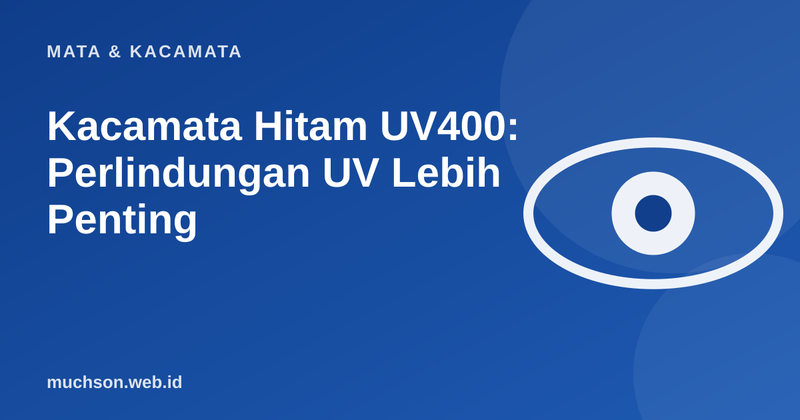

Beranda › Artikel › Mata & Kacamata
Mata & KacamataKacamata Hitam UV400: Perlindungan UV Lebih Penting
Banyak orang memilih kacamata hitam dari warna dan gayanya. Padahal fungsi utamanya adalah melindungi mata dari sinar ultraviolet, dan lensa yang gelap tanpa perlindungan UV bisa memperburuk keadaan.

Mengapa lensa gelap tanpa UV berbahaya
Di balik lensa gelap, pupil melebar karena cahaya berkurang. Jika lensanya tidak menyaring UV, lebih banyak sinar UV masuk lewat pupil yang melebar itu. Karena itu yang menentukan keamanan adalah filter UV, bukan gelapnya warna.
Apa yang sebaiknya tercantum di label
| Label | Artinya |
|---|---|
| UV400 / 100% UV protection | Menahan hampir seluruh UV-A dan UV-B |
| Polarized | Mengurangi silau pantulan dari air dan jalan, tidak otomatis berarti ada filter UV |
| Kategori filter (0-4) | Tingkat kegelapan lensa; makin tinggi makin gelap |
| Gradient | Lebih gelap di atas; nyaman untuk berkendara tetapi tidak untuk silau penuh |
Cek cepat: sudah cukup aman?
Mengapa penting
Kacamata hitam bukan hanya untuk gaya. Paparan UV jangka panjang dikaitkan dengan masalah mata tertentu, dan kelopak mata serta area sekitar mata juga ikut terlindungi. Anak-anak juga perlu perlindungan saat beraktivitas di luar.
Tanya jawab
Apakah lensa jernih bisa menahan UV?
Banyak lensa modern memiliki perlindungan UV bawaan, tetapi tidak semua. Periksa spesifikasi.
Apakah kacamata hitam murah di pinggir jalan aman?
Tidak ada jaminan. Tanpa label dan sertifikasi, sulit memastikan perlindungan UV-nya.
Apakah kacamata hitam perlu pada hari mendung?
UV tetap ada di hari mendung. Jika silau atau berada lama di luar, kacamata hitam tetap bermanfaat.